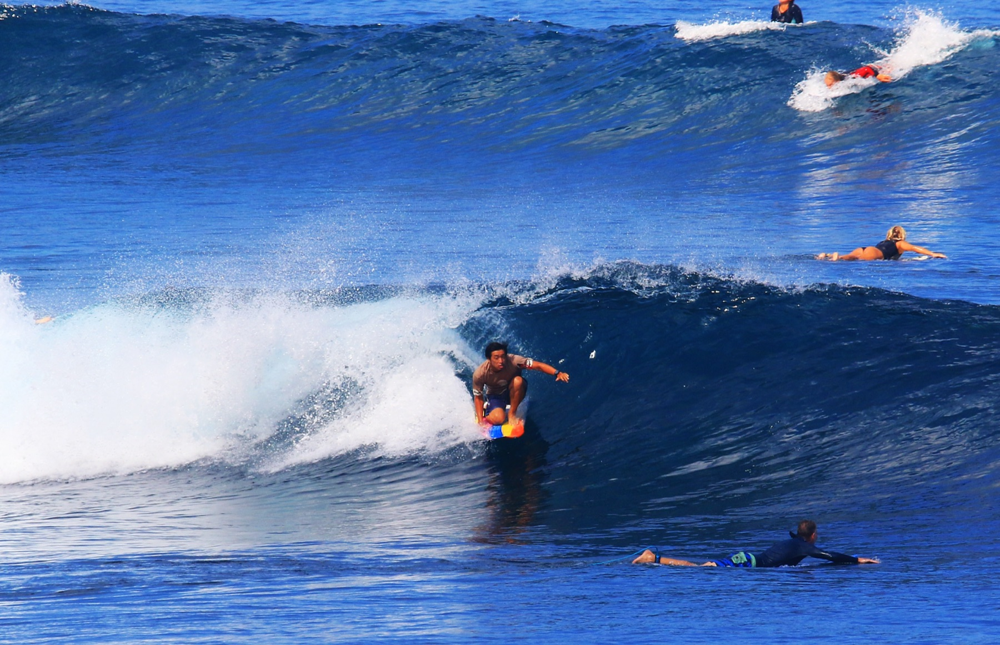

Firewire
Cymatic
Daily driver
The loud one. Blunt nose, flat deck, unreasonable speed — paddles like a door and turns like it's guilty about it. Takes everyday waves and makes them feel borrowed from somewhere better.

Field Notes — Indian Ocean
Uluwatu, Bali — dry season, head-high sets pouring over the reef
The set stood up on the outside ledge and everyone on the shoulder started scratching for the horizon — for once, I was sitting in the right spot. One paddle, the rail caught, and the whole Indian Ocean tilted forward.
No backlog, no roadmap, no notifications — just a moving wall of water.
That is the frame: mid-drop on the loud rainbow deck, weight low, lip already feathering overhead. What the photo doesn't show is the two-hour lull before it, or the reef tax collected on the way in. Fair trade.
By day I move systems and ship software. Out here none of that paddles for you. The ocean keeps its own changelog — swell period, tide push, reef shadow — and reading it honestly is the whole game.
Firewire
Daily driver
The loud one. Blunt nose, flat deck, unreasonable speed — paddles like a door and turns like it's guilty about it. Takes everyday waves and makes them feel borrowed from somewhere better.
Pyzel
Step up
The serious one. Comes off the rack when the reef starts drawing real lines — carries speed through the flats and holds an edge when the face goes vertical.